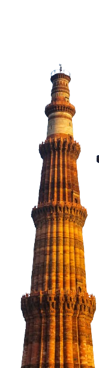
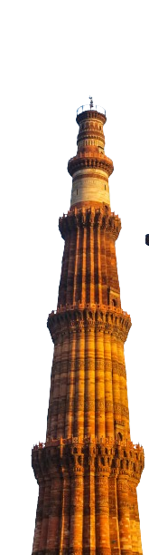
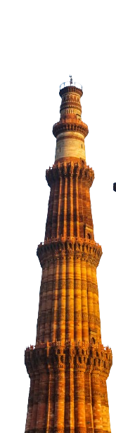
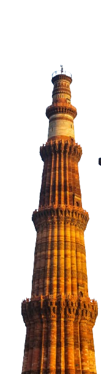

India
 



One of the oldest civilisations in the world, India is a mosaic of multicultural experiences. With a rich heritage and myriad attractions, the country is among the most popular tourist destinations in the world. It covers an area of 32, 87,263 sq. km, extending from the snow-covered Himalayan heights to the tropical rain forests of the south. As the 7th largest country in the world, India stands apart from the rest of Asia, marked off as it is by mountains and the sea, which give the country a distinct geographical entity.
According to the Ministry of Tourism, over 6.19 million and 1.52 million foreign tourists arrived in India in 2022 and 2021 respectively compared to 10.93 million in 2019, representing a -44% degrowth.[6][7] India has bigger domestic tourist population so it's not dependent on foreign tourist much. This makes India the 22nd most visited nation in the world and 8th in Asia and Pacific.[8] Domestic tourist visits to all states and union territories numbered 1,036.35 million in 2012, an increase of 16.5% from 2011.[9] In 2012, National Geographic's Traveller magazine named the state Kerala as one of the "ten paradises of the world" and "50 must see destinations of a lifetime".[10] In 2014, Tamil Nadu, Maharashtra and Uttar Pradesh were the most popular states for tourists.[11] Delhi, Mumbai, Chennai, Agra and Jaipur were the five most visited cities of India by foreign tourists during the year 2015. As of 2017, worldwide, Delhi is ranked 28th by the number of foreign tourist arrivals, while Mumbai is ranked 30th, Chennai 43rd, Agra 45th, Jaipur 52nd and Kolkata 90th.[12]
The World Economic Forum's Travel and Tourism Development Index 2021, which replaced its previous Travel and Tourism Competitiveness Report, ranks India 54th out of 117 countries overall.[13] The last edition of the Travel and Tourism Competitiveness Report, published in 2019, had ranked India 34th out of 140 countries overall. The report ranked the price competitiveness of India's tourism sector 13th out of 140 countries. It mentioned that India has quite good air transport infrastructure (ranked 33rd), particularly given the country's stage of development, and reasonable ground and port infrastructure (ranked 28th). The country also scored high on natural resources (ranked 14th), and cultural resources and business travel (ranked 8th).[14] The World Tourism Organization reported that India's receipts from tourism during 2012 ranked 16th in the world, and 7th among Asian and Pacific countries.[15]
India requires citizens of most countries to hold a valid passport and apply for a travel visa at their local Indian embassy or consulate before their visit. Travellers can apply directly by mail or in person, or through their local travel services company. In 2014, India implemented an online method for citizens of 156 countries to apply for an e-Tourist Visa.[17][18]
Nationals of Bhutan, Maldives, and Nepal do not require a travel visa to enter India. Citizens of Afghanistan, Argentina, Bangladesh, DPR Korea, Jamaica, Maldives, Mauritius, Mongolia, Nepal, South Africa and Uruguay are not required to pay a fee when obtaining an Indian visa.[19][20]
During the pandemic year 2020, India had access to just 23 countries for travel, whereas now the Indian passport holders can travel visa-free to 60 countries.[21]
A Protected Area Permit (PAP) is required to enter the states of Nagaland and Sikkim and some parts of the states of Arunachal Pradesh, Himachal Pradesh, Jammu and Kashmir, Manipur, Mizoram, Rajasthan and Uttarakhand. A Restricted Area Permit (RAP) is required to enter the Andaman and Nicobar Islands and parts of Sikkim. Special permits are needed to visit the Lakshadweep islands.[22]
Read More...